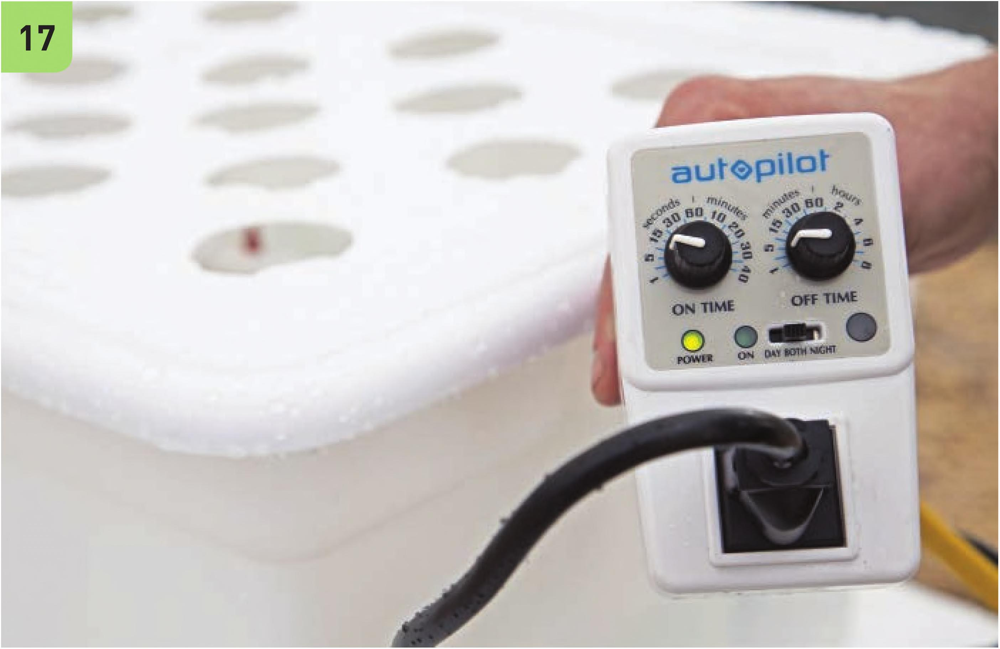
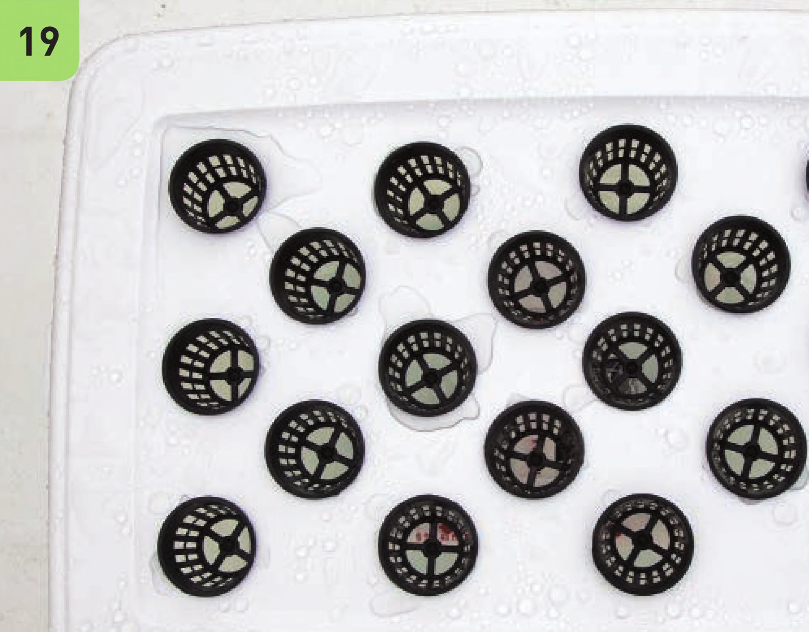

17 Plug the pump into a timer. This garden was set to water for 1 0 seconds every 5 minutes. The irrigation frequency will depend on the age of the crop, the environment, the size of the pots, and the timer selection. Many aeroponic systems operate well when on for 1 5 minutes and then off for 1 5 to 45 minutes. Plant 18 Add the net pots. 19 Amend the reservoir with a hydroponic fertilizer (do not use an organic hydroponic fertilizer). Transplant! 114 DIY HYDROPONIC GARDENS

